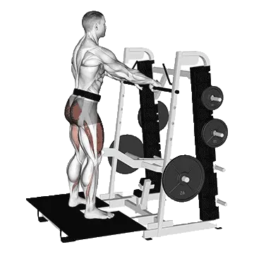

Belt squat
Belt squat permet de consulter la charge moyenne et les standards de force comme repères pour jambes. Les muscles principaux sont Quadriceps, Grand fessier.

Poids moyen : Intermédiaire
Repère pour une personne de niveau intermédiaire.
Hommes
381 lb
Femmes
79 lb
Poids moyen de Belt squat [1RM]
| Niveau | ||
|---|---|---|
| Débutant | 115 lb | 24 lb |
| Novice | 226 lb | 47 lb |
| Intermédiaire | 381 lb | 79 lb |
| Avancé | 577 lb | 118 lb |
| Élite | 803 lb | 164 lb |
Note : ces standards sont des estimations de 1RM basées sur des pratiquants moyens. Ils peuvent varier selon le poids de corps, l'âge et d'autres facteurs personnels. Consulte les données détaillées dans le tableau ci-dessous.
Standards de force de Belt squat (lb)
Hommes par poids de corps (lb) [1RM]
| Poids de corps | Débutant | Novice | Intermédiaire | Avancé | Élite |
|---|---|---|---|---|---|
| 110 | 36 | 99 | 198 | 331 | 489 |
| 120 | 48 | 118 | 224 | 364 | 530 |
| 130 | 60 | 137 | 250 | 397 | 569 |
| 140 | 73 | 155 | 274 | 428 | 606 |
| 150 | 85 | 173 | 299 | 458 | 641 |
| 160 | 98 | 191 | 322 | 487 | 675 |
| 170 | 111 | 209 | 345 | 515 | 708 |
| 180 | 124 | 226 | 367 | 542 | 740 |
| 190 | 136 | 243 | 389 | 568 | 771 |
| 200 | 149 | 260 | 410 | 593 | 800 |
| 210 | 162 | 277 | 431 | 618 | 829 |
| 220 | 174 | 293 | 451 | 642 | 857 |
| 230 | 186 | 309 | 470 | 666 | 884 |
| 240 | 198 | 324 | 490 | 689 | 910 |
| 250 | 210 | 340 | 508 | 711 | 936 |
| 260 | 222 | 355 | 527 | 733 | 961 |
| 270 | 234 | 370 | 545 | 754 | 985 |
| 280 | 246 | 384 | 562 | 775 | 1009 |
| 290 | 257 | 399 | 580 | 795 | 1032 |
| 300 | 269 | 413 | 597 | 815 | 1054 |
| 310 | 280 | 427 | 613 | 834 | 1076 |
Hommes par âge [1RM]
| Âge | Débutant | Novice | Intermédiaire | Avancé | Élite |
|---|---|---|---|---|---|
| 15 | 98 | 192 | 325 | 492 | 683 |
| 20 | 112 | 220 | 371 | 563 | 782 |
| 25 | 115 | 226 | 381 | 577 | 803 |
| 30 | 115 | 226 | 381 | 577 | 803 |
| 35 | 115 | 226 | 381 | 577 | 803 |
| 40 | 115 | 226 | 381 | 577 | 803 |
| 45 | 109 | 214 | 362 | 548 | 761 |
| 50 | 102 | 201 | 339 | 514 | 715 |
| 55 | 95 | 186 | 314 | 476 | 661 |
| 60 | 86 | 170 | 287 | 434 | 603 |
| 65 | 78 | 153 | 259 | 392 | 545 |
| 70 | 70 | 137 | 232 | 352 | 489 |
| 75 | 63 | 123 | 208 | 315 | 437 |
| 80 | 56 | 110 | 186 | 281 | 391 |
| 85 | 50 | 98 | 166 | 252 | 351 |
| 90 | 45 | 89 | 150 | 227 | 316 |
Femmes par poids de corps (lb) [1RM]
| Poids de corps | Débutant | Novice | Intermédiaire | Avancé | Élite |
|---|---|---|---|---|---|
| 90 | 17 | 37 | 65 | 102 | 144 |
| 100 | 19 | 39 | 68 | 105 | 148 |
| 110 | 21 | 42 | 71 | 109 | 153 |
| 120 | 22 | 44 | 74 | 112 | 157 |
| 130 | 23 | 46 | 77 | 116 | 160 |
| 140 | 25 | 47 | 79 | 118 | 164 |
| 150 | 26 | 49 | 81 | 121 | 167 |
| 160 | 27 | 51 | 83 | 124 | 170 |
| 170 | 28 | 52 | 85 | 126 | 173 |
| 180 | 30 | 54 | 87 | 129 | 176 |
| 190 | 31 | 55 | 89 | 131 | 178 |
| 200 | 32 | 57 | 91 | 133 | 181 |
| 210 | 33 | 58 | 93 | 135 | 183 |
| 220 | 34 | 60 | 94 | 137 | 186 |
| 230 | 35 | 61 | 96 | 139 | 188 |
| 240 | 36 | 62 | 97 | 141 | 190 |
| 250 | 36 | 63 | 99 | 143 | 192 |
| 260 | 37 | 64 | 100 | 144 | 194 |
Femmes par âge [1RM]
| Âge | Débutant | Novice | Intermédiaire | Avancé | Élite |
|---|---|---|---|---|---|
| 15 | 21 | 40 | 67 | 101 | 140 |
| 20 | 24 | 46 | 77 | 115 | 160 |
| 25 | 24 | 47 | 79 | 118 | 164 |
| 30 | 24 | 47 | 79 | 118 | 164 |
| 35 | 24 | 47 | 79 | 118 | 164 |
| 40 | 24 | 47 | 79 | 118 | 164 |
| 45 | 23 | 44 | 74 | 112 | 156 |
| 50 | 21 | 42 | 70 | 105 | 146 |
| 55 | 20 | 39 | 65 | 98 | 135 |
| 60 | 18 | 35 | 59 | 89 | 123 |
| 65 | 16 | 32 | 53 | 80 | 111 |
| 70 | 15 | 29 | 48 | 72 | 100 |
| 75 | 13 | 25 | 43 | 65 | 89 |
| 80 | 12 | 23 | 38 | 58 | 80 |
| 85 | 11 | 20 | 34 | 52 | 72 |
| 90 | 9 | 18 | 31 | 47 | 65 |
Note : une barre standard de salle de sport pèse généralement 44 lb.
Suivi et analyse dans l'app Shiba
Consultez poids, répétitions et progression au même endroit.
Comment lire le tableau
| Niveau | Description | Répartition |
|---|---|---|
| Débutant | Maîtrise la bonne technique et s'entraîne régulièrement depuis au moins 1 mois. | Bas 5% |
| Novice | S'entraîne régulièrement depuis au moins 6 mois. | Top 80% |
| Intermédiaire | S'entraîne régulièrement depuis au moins 2 ans. | Top 50% |
| Avancé | S'entraîne régulièrement depuis plus de 5 ans. | Top 20% |
| Élite | S'entraîne spécifiquement sur cet exercice depuis plus de 5 ans. | Top 5% |
Autres exercices
Jambes
Squat à la safety bar
Jambes
Pistol squat
Jambes
Squat avec pause
Jambes
Hack squat à la barre
Jambes / Barre
Squat sumo
Jambes
Kickback à la poulie
Jambes / Poulie
Mollets au poids du corps
Jambes
Fente
Jambes
Pont fessier
Jambes
Pin squat
Jambes
Fentes marchées
Jambes
Front squat aux haltères
Jambes / Haltères